Розглянемо приклад task3_1, в якому реалізуємо клас Student з відкритими полями і конструктором з параметрами для їх ініціалізації. Клас Student містить відкритий метод public void StudentRating(int R), який виводить текст, в залежності від рейтингу студента. В методі Main() виконується тестування класу. Зверніть увагу, що опис класу Student розміщується в просторі імен, а не в класі Program. Опис класу Student рекомендується розмістити в окремому файлі Student.cs, тобто модулі класу.
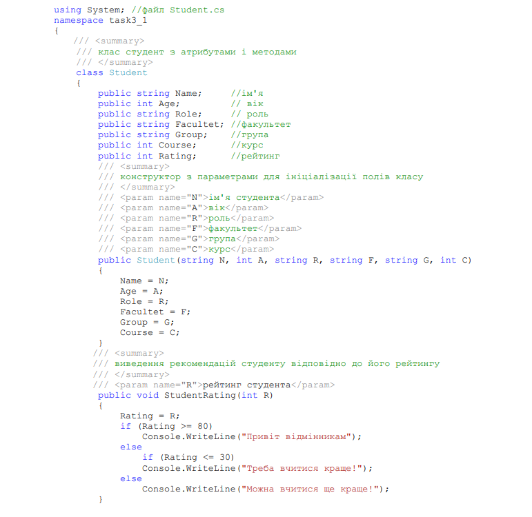 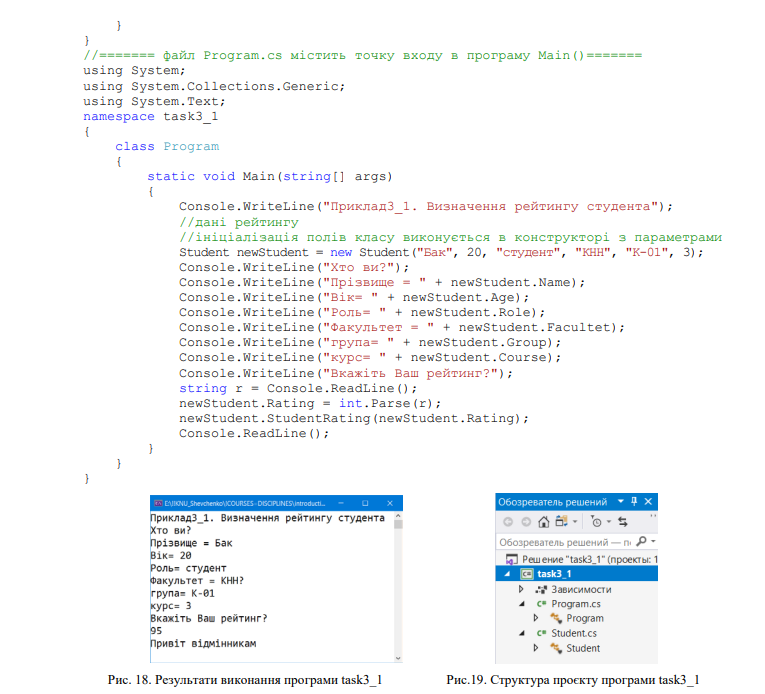Змінимо клас Student, зробимо поля Name i Age закритими, а доступ до них реалізуємо через властивості get і set.
Розглянемо програму task3_3, що реалізує автоматизований облік банківських
відомостей. На кожного клієнта банку зберігаються наступні відомості:
• прізвище, ім’я, по-батькові;
• дата народження;
• паспортні дані;
• ідентифікаційний код;
• місце роботи (навчання);
• номери рахунків.
Для кожного клієнта визначимо операції:
• додати нового клієнта;
• видалити клієнта;
• змінити реквізити клієнта.
На кожному рахунку зберігається інформація про поточний баланс. З кожним
рахунком можна виконувати наступні дії:
• відкриття, закриття;
• внесення грошей, зняття грошей;
• перегляд балансу.
Створимо два класи. Класс Client для опису інформації про клієнта. Клас
Account для опису банківського рахунку
Область видимості полів класу має бути визначена або як закрита, або як захищена. Доступ до полів - членів класу має бути організований або за допомогою відкритих методів, або за допомогою властивостей класу. Створимо властивості класу Client, які забезпечують читання і запис значень закритих полів класу
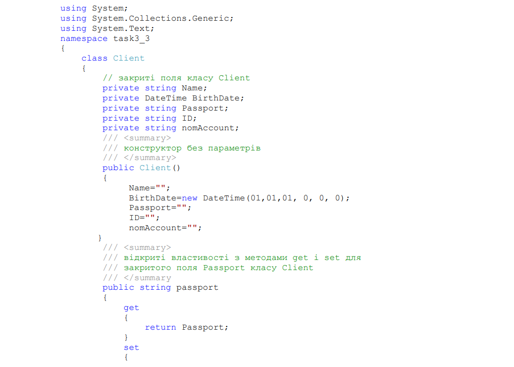 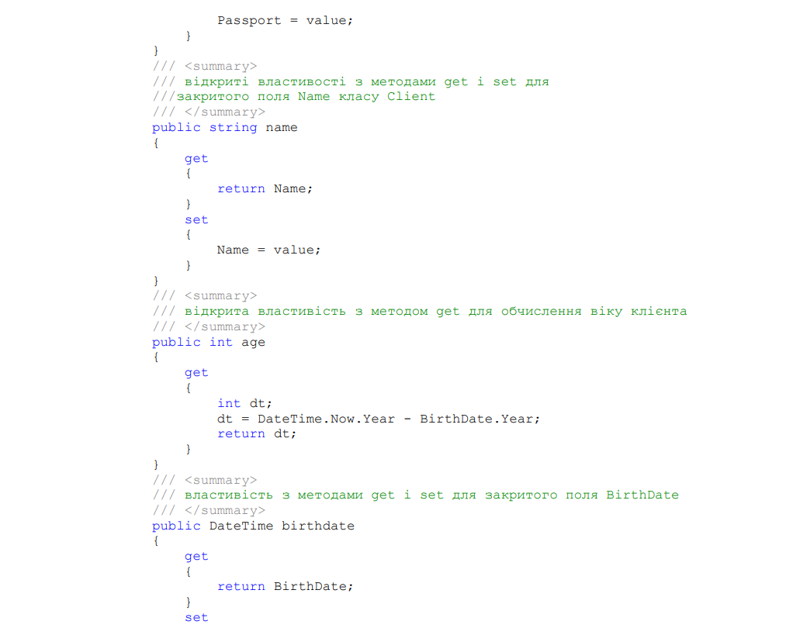 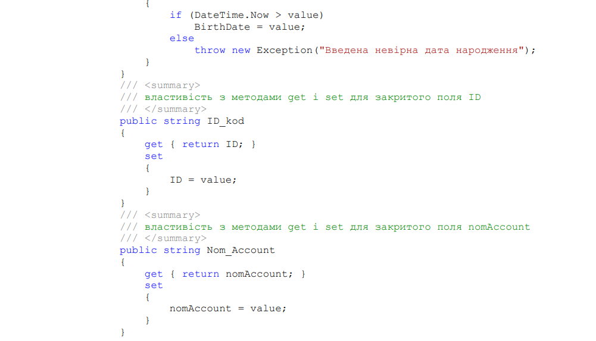
Як видно з прикладу, властивість складається з методів set і get. При цьому
властивість повинна містити хоч би один з методів. Метод set дозволяє змінювати
значення поля класу, get − отримувати значення. У метод set передається значення
параметра за допомогою змінної value. Обидва методи можуть містити довільну
кількість операторів, що описують алгоритм виконання дій в процесі читання або
запису значення в полі класу. У даному прикладі властивості passport і name
дозволяють просто дістати доступ до полів класу, читаючи або встановлюючи значення
відповідних змінних. Властивість birthdate також призначена для читання і запису
значення змінної - члена класу BirthDate. При цьому при читанні значення (операція
get) відбувається просто передача значення змінної BirthDate, при спробі ж запису
нового значення в цю змінну відбувається перевірка допустимості встановлюваного
значення змінної. В даному випадку перевірка зводиться до порівняння нового
значення дати народження з поточною датою. Якщо встановлюване значення дати
народження більше або дорівнює поточній даті, генерується виключення, яке не
дозволяє записати нове значення в змінну - член класу.
Властивість age застосовується для отримання поточного віку клієнта. Вона
призначена лише для читання значення із змінної, тому містить лише метод get. При
використанні властивості age відбувається обчислення поточного значення віку
клієнта в роках шляхом віднімання року народження від поточного значення року.
Використання властивостей аналогічно використанню змінних. У наступному
прикладі створюється об'єкт с1 класу Client. Потім поля цього об'єкту заповнюються
значеннями з використанням властивостей. Після цього на екран виводяться значення
полів, для цього також застосовуються властивості класу:
Розглянемо конструктор класу і визначимо роль його параметрів.
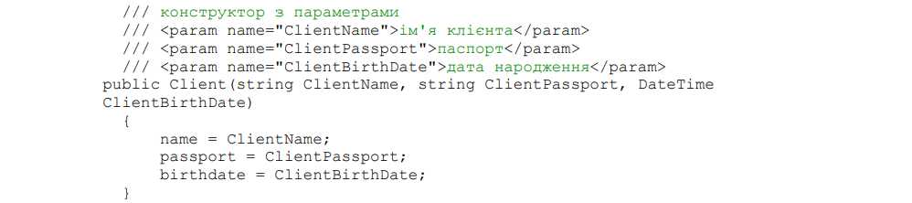
Видно, що конструктор має три параметри. У тілі конструктора відбувається
запис переданих як параметри значень у відповідні поля класу за допомогою
властивостей даного класу. У випадку з датою народження це дозволяє не дублювати
процедуру перевірки введеної дати, а скористатися алгоритмом, реалізованим у
властивості birthdate.
Створимо також метод, що дозволяє змінити значення полів об'єкту класу Client:
Як видно з прикладу, код цього методу повністю ідентичний коду конструктору
з параметрами з різницею в імені методу, а також в типі значення, яке повертається.
Звичайно, в даному випадку можна було б обійтися і використанням властивостей для
зміни значень полів класу, проте, інколи буває корисно, аби такого роду зміни були
реалізовані в рамках одного методу, тим більше, якщо алгоритм змін є нестандартним.
Тепер, з використанням конструктора з параметрами, можна створити і відразу
ж ініціалізувати об'єкт класу Client:
У першому варіанті класу Account визначимо такі поля класу. Окрім двох основних полів credit і debit, які зберігають надходження і витрати рахунку, введемо поле balance, яке задає поточний стан рахунку, і два поля, пов'язані з останньою виконуваною операцією. Поле sum зберігатиме суму грошей поточної операції, а поле result – результат виконання операції.
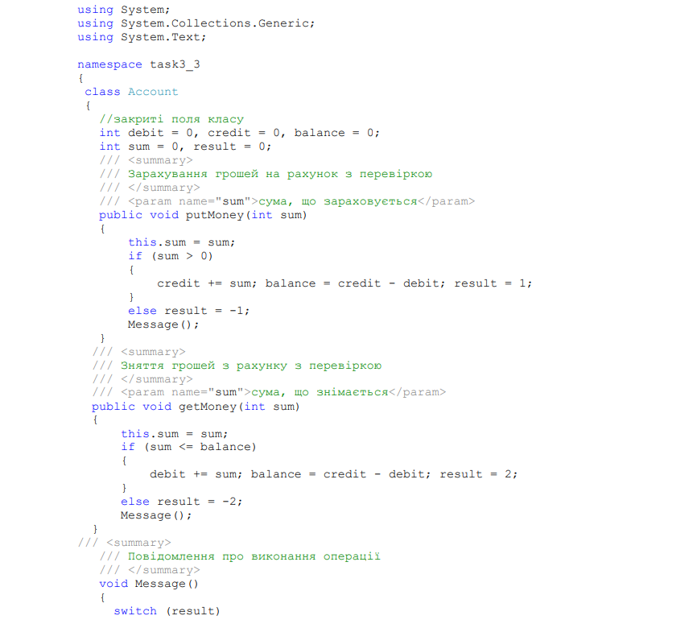 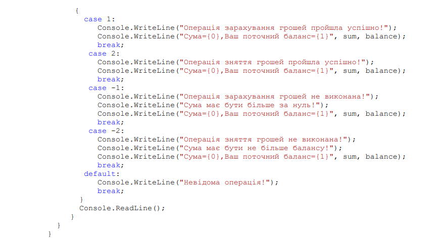Як можна бачити, лише у методів getMoney() і putMoney() класу Account є один вхідний аргумент, що визначає суму грошей, з якою працює клієнт. Лише клієнт може вирішити, яку суму він хоче зняти або покласти на рахунок. Інших аргументів в методах класу Account немає − вся інформація передається через поля класу. Зменшення кількості аргументів приводить до підвищення ефективності роботи з методами, оскільки зникають витрати на передачу фактичних значень аргументів. Але при цьому ускладнюються операції роботи з вкладом, оскільки потрібно в момент виконання операції оновлювати значення полів класу. Закритий метод Message() викликається після виконання кожної операції, повідомляючи про те, як пройшла операція, і інформуючи клієнта про поточний стан його балансу
Спроектуємо аналогічний клас Account1, який відрізняється лише тим, що у нього буде менше полів. Замість поля balance в класі з'явиться відповідний метод з таким самим іменем, замість полів sum і result з'являться аргументи в методах, що забезпечують необхідну передачу інформації. Опис класу може бути такий.
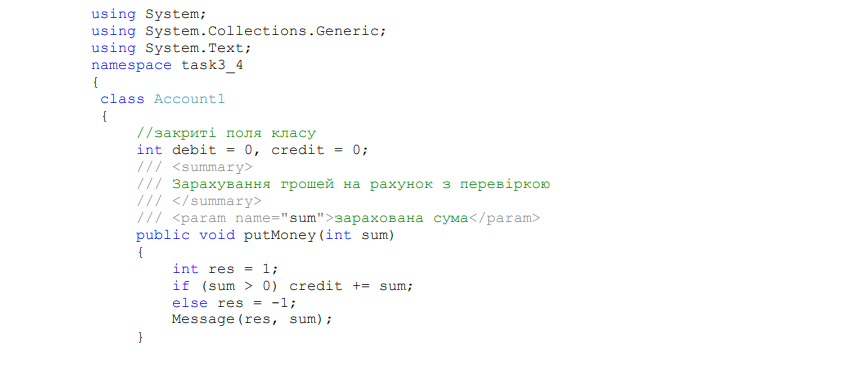 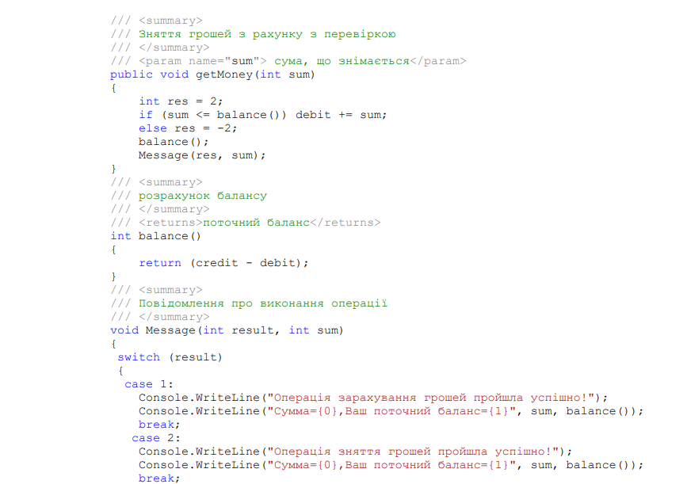 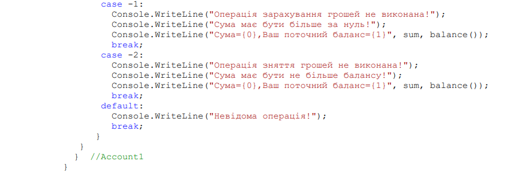
Порівнюючи опис класу Account1 з описом класу Account, можна побачити, що
кількість полів скоротилося з п'яти до двох, спростилися основні методи getMoney() і
putMoney(). Але в класі Account1 з'явився додатковий метод balance(), що багато разів
викликається, і в методі Message() з'явилися два аргументи. Який клас кращий?
Однозначно сказати не можна, все залежить від контексту, від пріоритетів, заданих при
створенні конкретної системи.
Для тестування роботи з класами Account1 і Account використовується метод
TestAccounts() класу Program, що викликається в методі Main():
У мові C# будь-який клас у своїй реалізації може містити оголошення іншого
класу. Клас, що оголошується в межах іншого класу, тобто в межах фігурних дужок,
що обмежують опис класу, називається вкладеним класом. Вкладені класи можуть
мати модифікатори доступу public, protected, internal, protected internal, private або
private protected. Об`єкт вкладеного класу можна оголосити у випадку, якщо
вкладений клас оголошений як видимий (не як private).
Розглянемо приклад task3_5. Нехай Book – ім’я класу, який містить в собі
оголошення іншого класу з іменем Price. Якщо вкладений клас оголошено не як
закритий private-клас, створення екземпляру цього класу має вигляд:
Book.Price obj = new Book.Price();
Код прикладу task3_5 може бути такий.
Класи можуть бути частковими. Тобто ми можемо мати кілька файлів з визначенням одного і того самого класу, і при компіляції всі ці визначення будуть скомпільовані в одне. Наприклад, визначимо в проекті task3_6 два файли для класу Person з кодом.
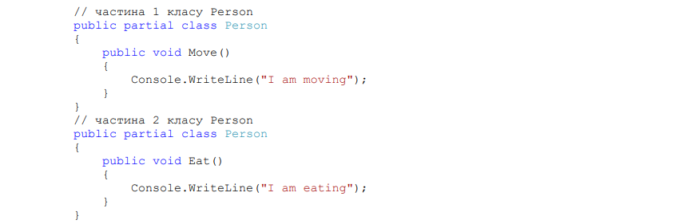
Отже, два файли в проекті містить визначення одного і того самого класу Person,
які містять два різних методи. Обидва визначені класи є частковими. Для цього вони
визначаються з ключовим словом partial. Ключове слово partial вказує, що інші
частини класу, структури або інтерфейсу можуть бути визначені в просторі імен. Усі
частини класу повинні використовувати ключове слово partial. Для формування
остаточного класу всі частини повинні бути доступні під час компіляції. Всі частини
повинні мати однакові модифікатори доступу, наприклад public, private тощо.
Протестуємо використання методів часткових класів, викликаючи їх в методі
Main().
Часткові класи можуть містити часткові методи. Такі методи також визначаються з ключовим словом partial. Причому визначення часткового методу без тіла методу знаходиться в одному частковому класі, а реалізація цього самого методу – в іншому частковому класі..
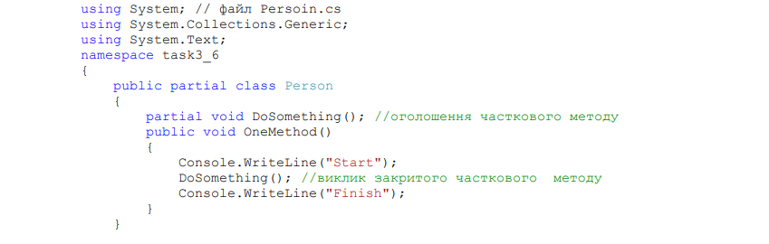 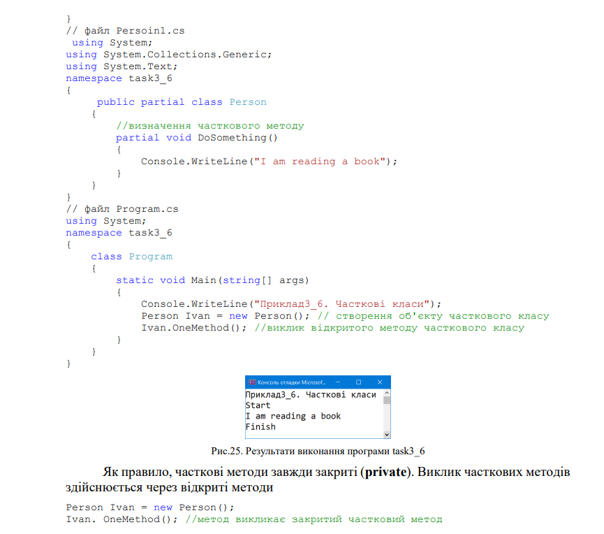В С# для роботи з файлами і потоками використовуються класи FileStream StreamWriter, StreamReader, FileInfo,
та інші класи.
Для введення і виведення даних не потоками, а рядками призначені класи
StringReader, StringWriter.
Розглянемо приклад task3_7. В цьому прикладі спочатку створюється об'єкт fout
класу StreamWriter, який визначає файл для виведення output.txt. Якщо не вказати
повний шлях до файлу, файл буде створений в директорії, де розміщується exe-файл
програми: ...\\bin\\debug\\output.txt
Далі визначаються і ініціалізуються змінні int i та string s, значення яких
записуються у вихідний файл output.txt. Метод Close() закриває файл. В другій частині
прикладу task3_7 по черзі зчитаються рядки з файлу input.txt, перетворюються у
числові типи і виводяться на консоль. Файл input.txt створений в текстовому редакторі
і використовується тільки для читання.